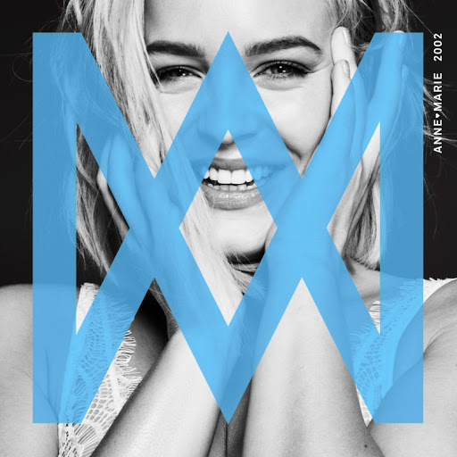

2002어린 시절의 사랑이야기와 더불어 그 시기에
앤 마리가 자주 들었던 노래들의 가사를 이용해서 쓴 노래이다.
2018년 4월에 발매한 곡이지만 역주행으로 2019년 7월에도 차트에 올라온 노래이다.
마치 한 여름에 숲속에서 친구와 연인과 즐거운 추억을 보내고 있는 느낌과
그 시절 당시 유명한 팝송의 구절이 이어져 추억에 젖게 되는 노래이다.

Anne - Marie
Friends
Anne - Marie
Birthday2021년도 1월에 발매한 곡으로 이별한 내용의 곡으로
20대의 힘들어하는 모습을 나타낸 내용이다.
술이나 파티로 이별의 아픔을 잊어보려 하지만 잘 되지 않은 슬픈 내용의 노래이다.
Anne - Marie
To Be Young2021년도 1월에 발매한 곡으로 도자켓과 콜라보한 노래이다.
가사중에 억만장자가 될라면 아직 멀었지만 그날이 올때까지 사랑도하고
일탈도 하고 얻어터져도 다시 일어나는것이 바보같아도 그게 젊음이란 가사가 있는데
내 얘기 같기도 하고 가사 하나하나가 위로가 되는 노래이다.